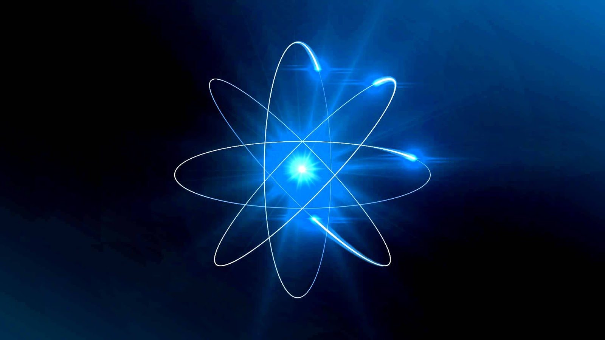

Sumário
Introdução à Física Quântica

Este é um tópico introdutório ao conteúdo de Física Moderna, portanto há somente uma
introdução sobre a história da Física e seu começo.
Com o passar do tempo, a parte denominada Física Clássica não foi capaz de explicar
alguns fenômenos importantes, como os relacionados a matéria abaixo do nível atômico,
efeito fotoelétrico, radiação do corpo negro.
Com isso, por volta de 1900 deram-se início, aos denominados, estudos da física quântica
Refêrencias